ZKDecrypto is an open-source GPL v2 program whose primary design goal is to solve homophonic (and monophonic) substitution ciphers.
Originally designed to aid in solving the infamous Zodiac Killer's unsolved 340-length cipher, the program has expanded to be capable of
solving general case homophonic and monophonic ciphers in English, German, Spanish and Italian.
The program is effectively designed as a "workbench" of sorts, to allow the user to interactively combine the power and speed of the computer
with the user's own language recognition skills in order to more quickly analyze and solve these types of ciphers. The program will likely not
solve any cipher "perfectly," however, but it can get you very close. With a bit of ingenuity and trial-and-error, it can generally work well to
solve ciphers of greater than approximately 100-120 length.
There is a definite learning curve to using the program effectively, and this can best be achieved through use and experimentation.
Many example/test ciphers are included with the program help new users. Try to solve these. The README.RTF file in the "cipher" directory
describes them. They are basically just ASCII text files, and you can add your own. Keys are included for some, but most have no key files
included. These ciphers are there for learning purposes.
USAGE NOTES:
#1. There is a True Type font (zkdfont.ttf) included with the program in the /help/images directory. While not strictly necessary, it is best if youinstall this font into your Windows font directory. This will allow you to see many of the ciphers using their original symbols instead of their
ASCII equivalents. You will find this to make things much easier when referring to specific symbols. While the program itself dynamically loads
and unloads this font on entry and exit, installing it will allow much easier editing and viewing of ciphers.
#2. In the "language" directory, you will find four sub-directories, "eng" "spa" "ger" and "ita." In each of these language directories,
you will find a file named "userdict.txt." You can add words to this file, and they will be added to all the words the program uses from it's
respective "dictionary.txt" file. So, if you feel that "Kaczynski," "Gaikowski," or "Lebowski" should be in there, feel free to add it. Separate
words by spaces or carriage returns. (They don't have to be Polish.)
TABLE OF CONTENTS
How to use the program
How to add extra characters to the key
How to edit the cipher
How to save current best key
How to open a saved key
How to save the text
How to switch language
How to change process priority (system resources used)
How to lock a character to a symbol (and unlock)
How to merge symbols and simplify the cipher
Using the word-plug feature
Excluding letters from symbols
Changing the maximum allowable failure
Changing the number of random swaps on a key after a failure
Changing the revert period
Transposing the cipher text
Performing polyalphabetic analysis (Vignere ect...)
Performing row/column index of coincidence analysis
Undo changes
Erasing the key
______________________________________________________________________
How to use the program
1. Open the program.
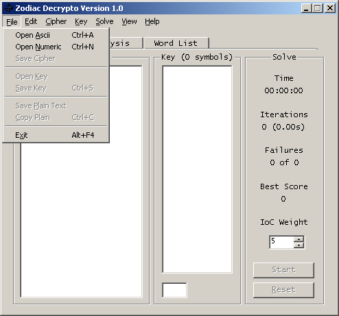
2. Select File>Open Ascii (Alternatively Ctrl+A) or Open Numeric
(Alternatively Ctrl+N).
3. Browse to the ASCII(text) or Numeric file that contains the cipher,
click on the file, and then click the "Open" button.
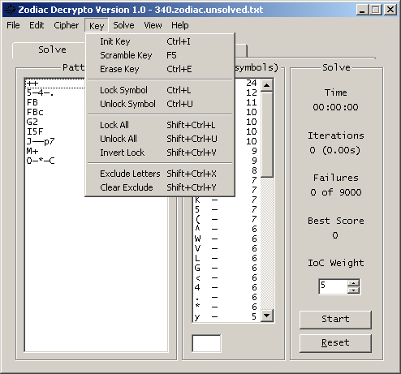
4. Select Key>Init Key (Alternatively Ctrl+I) and select "OK" (this
will open the Key settings window which will give you a standard
frequency
key based on the current cipher. The values in the fields can be adjusted.).
5. Now you can select the "Start" button in the main window.
6. The program will run until it reaches maximum failures.
7. The Start/Stop buttons do precisely what they say.
8. The Reset button internally resets the solver back to zero so that
another test can be run.
______________________________________________________________________
How to add extra characters to the key
1. Select Solve>Options.
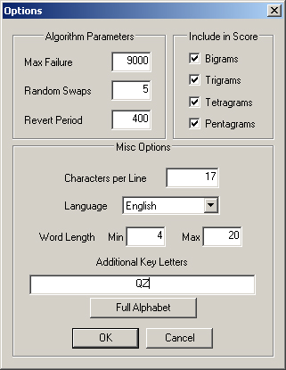
2. You should see a text box labeled "Additional Key Letters" near the
bottom of the window.
3. Add any extra characters that you want the solver to consider to
this text box.
4. Uncommon characters make great "Additional Key Letters".
5. Click "OK", the new settings take effect immediately.
______________________________________________________________________
How to edit the cipher
1. Select Edit>Edit Cipher.
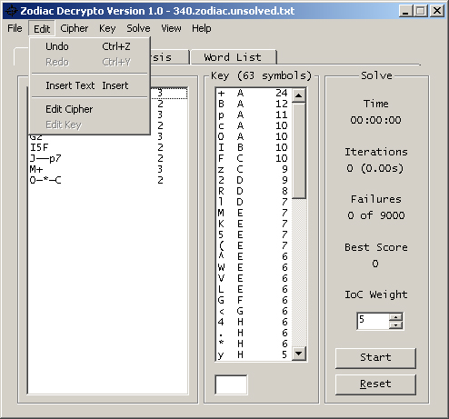
2. A basic text editor (Notepad) will open containing your cipher, do
not worry about spacing, the program automatically
removes extra spaces.
3. Make desired changes to cipher.
4. Click File>Save.
5. You will have to reload your changed cipher for the changes to be seen in the program.
______________________________________________________________________
How to save the current best key
1. Select File>Save Key (Alternatively Ctrl+S).
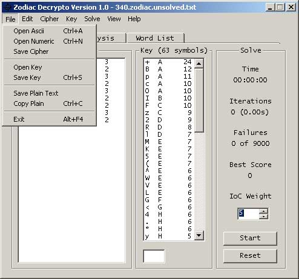
2. Browse to the desired save directory.
3. Give your key file an appropriate name and click Save.
4. Saving a key will also save all of your locks & exclusions.
______________________________________________________________________
How to open a saved key
1. Select File>Open Key.

2. Browse to the directory that contains the key file.
3. Click the file and click the "Open" button.
4. This essentially gives the program the state of the key file when
you saved the file.
______________________________________________________________________
How to save the plain text
1. Select File>Save Plain Text.
2. Browse to the desired save directory.
3. Give your key file an appropriate name and click save.
4. Suggestion: If you are interested in preserving the current solution,
you may want to save the key along with the plain text.
______________________________________________________________________
How to switch the solving language
1. Select Solve>Options.
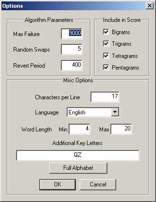
2. In the "Misc Options" section you should see a drop down list labeled
"Language".
3. Select your desired language and click "OK".
4. The settings take effect immediately.
______________________________________________________________________
How to change the amount of system resources the program uses (How
much it slows your system)
1. Select Solve>Thread Priority.
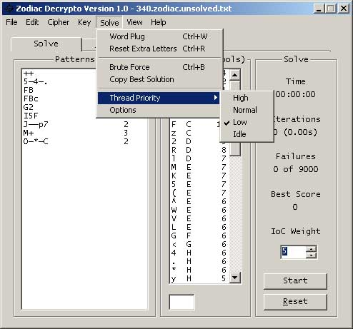
2. You should see a list of priorities, High being the most system intensive,
Idle being the least intensive.
3. Select your desired priority and a check-mark should appear next
to it.
4. Suggestion - The program is very CPU-Intensive, and runs best on a dual core (or more) system.
______________________________________________________________________
How to lock/unlock a character to a symbol
1. A character-symbol combination will lock by double clicking. (Alternatively
by selecting and Ctrl+L)
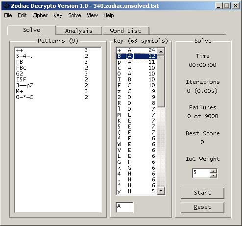
2. Square brackets will appear around a locked symbol.
3. You can also lock a character-symbol combination by highlighting
it and select Key>Lock Symbol.
4. You can unlock by double clicking or repeating step 3 and selecting
Key>Unlock Symbol (Alternatively by selecting and Ctrl+U)
5. You can lock and unlock all symbols by select Key>Lock All or
Unlock All
______________________________________________________________________
How to merge symbols and simplify the cipher
Please note: If you suspect that two symbols represent the same plain-text character, it is beneficial to the solver to merge those characters
together. In general, the fewer the symbols, the easier it is to solve (if it is homophonic). The downfall may be that the merging of incorrect
symbols destroys the natural expected frequencies between plain characters and cipher characters.
1. Select Cipher>Merge Symbols (Alternatively Ctrl+M).
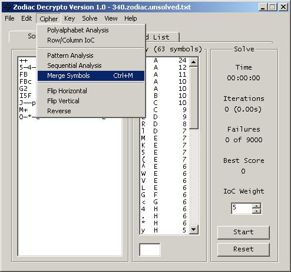
2. Select the two symbols you would like to merge in each of the drop
down lists.
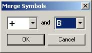
3. Click "OK" and the symbols will be automatically merged.
4. View>Merge Log will show you what symbols have been merged.
______________________________________________________________________
Using the word-plug feature
The word-plug feature takes a word (or words) as input and attempts to place that word in an optimal location within the cipher. It automatically
adjusts the key when it places the word and locks those character-symbol combinations. This is a more advanced feature that takes practice using.
It is good to test it out on practice ciphers. Just because it places a word, it doesn't mean that the word is in the actual correct solution.
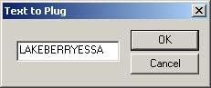
1. Select Solve>Wordplug (Alternatively Ctrl+W).
2. Type in the word that you want the word-plugger to place.
3. Click "OK" and it will automatically be placed within the cipher if the score is high enough.
______________________________________________________________________
Excluding letters from symbols
Excluding letters allows you to prevent a symbol from taking on a certain
letter. This feature is useful for controlling the behavior of symbols.
1. Right click the desired symbol in the key area and select "Exclude
Letters" (Alternatively Shift+Ctrl+X).
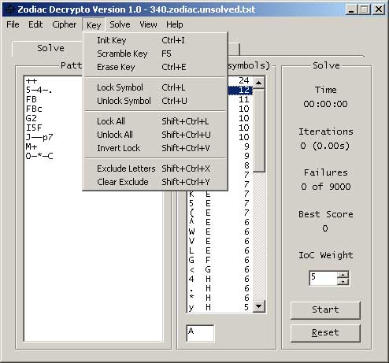
2. Type in all of the letters that you would like to be excluded from
that symbol.

3. Click "OK" and your changes will take effect.
4. View>Exclusions will show what letters have been excluded.
5. Key>Clear Exclude will eliminate all exclusions from all symbols.
______________________________________________________________________
Changing the maximum allowable failure
This feature effectively allows you to control how long the program runs the solver on a given cipher.
1. Select Solve>Options.
2. Change the value located in the "Max Failures" textbox to your desired
value.
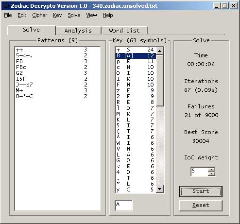
3. Click "OK" and your changes will take effect (you should notice the
"Failures" number is updated on the "Solve" tab).
______________________________________________________________________
Changing the number of random swaps on a key after a failure
This parameter helps give the program more time to work its way out of local maxima when attempting to solve a cipher.
1. Select Solve>Options.
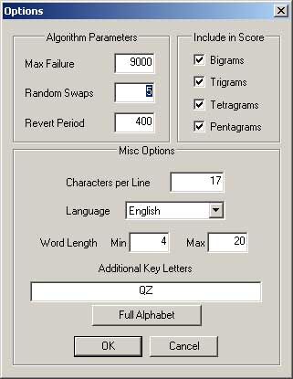
2. Change the value located in the "Random Swaps" textbox to your desired
value.
3. Click "OK" and your changes will take effect.
4. The default value is 5. Lower values tend to stick to the best key yet found, while higher values explore the search space more thouroughly.
5. Suggestion - On some harder ciphers, you might try increasing this number.
______________________________________________________________________
Changing the revert period
The revert period is how many iterations the program will perform before reverting back to the previous best key.
This can be an important factor to prevent being stuck in a local maxima.
1. Select Solve>Options.
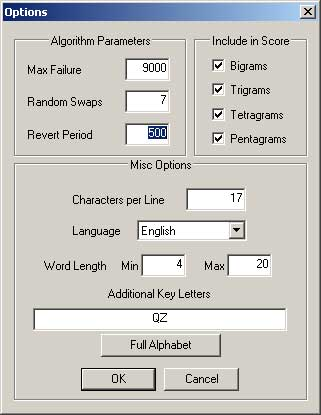
2. Change the value located in the "Revert Period" textbox to your desired
value.
3. Click "OK" and your changes will take effect.
4. The default value is 400.
______________________________________________________________________
Transposing the cipher text
1. Select Cipher and "Flip Horizontal" or "Flip Vertical" or "Reverse".
These menu choices will rearrange the cipher as described.
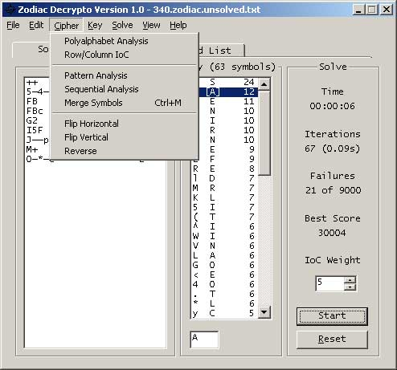
2. Your change should take effect immediately.
NOTE:
"Flip Horizontal" and "Flip Vertical" will only operate on ciphers that are displayed in a perfect rectangle. "Reverse" works on all ciphers.
______________________________________________________________________
Performing polyalphabetic analysis (Vigenere,
etc...)
This feature is useful for analysing polyalphabetic ciphers. This feature
generates a graph with Key Length on the x-axis and
Index
Of Coincidence on the y-axis. Vigenere ciphers tend to have a peak
index of coincidence on the correct key length.
1. Select Cipher>Polyalphabet Analysis.
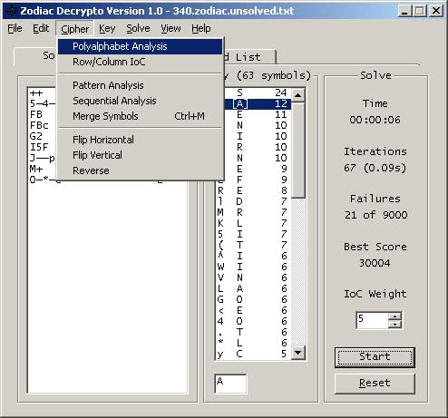
2. Put in a max key length and select "OK".
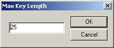
3. You should now see a graph.
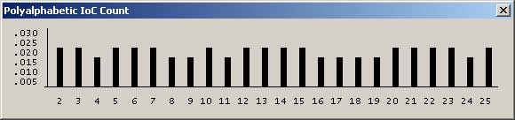
______________________________________________________________________
Performing Row/Column Index Of Coincidence analysis
This feature is for analyzing the level of coincidence on rows and columns.
1. Select Cipher>Row/Column IoC.
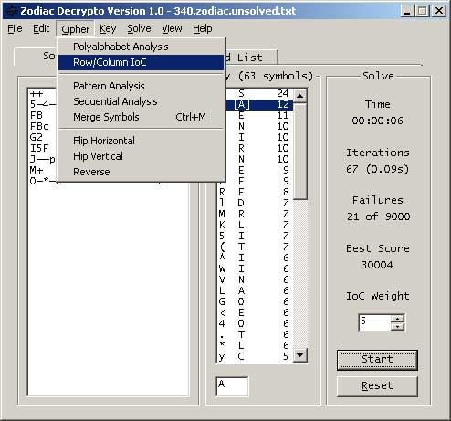
2. You should now see a graph with the row/column Index Of Coincidence
values for the current cipher.
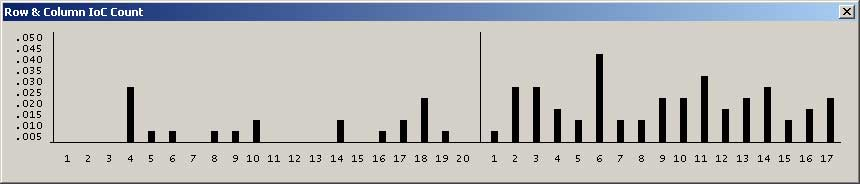
______________________________________________________________________
Undo changes
1. Select Edit>Undo (Alternatively Ctrl+Z).
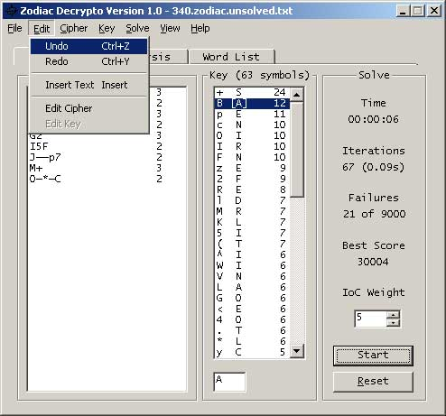
2. Your change should now be reverted.
______________________________________________________________________
Erasing the key
1. Select Key>Erase Key (Alternatively Ctrl+E).
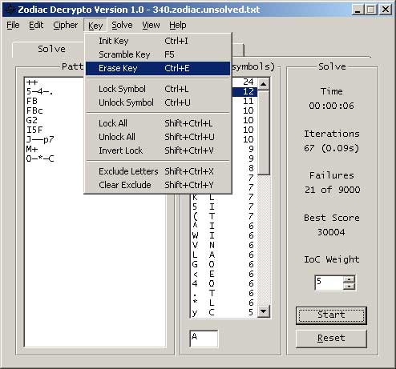
2. The key will be erased.